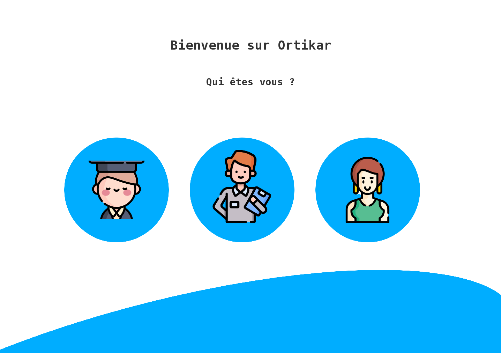

Projet



Description du projet :
Ce projet a été réalisé au sein de l'école en deuxième de BTS SIO. Ce projet nous a aussi permis de développer nos capacités en Java et de comprendre de façon intégrale la programmation POO.
Contraintes & difficultés :
- L'apprentissage de Java
- Le design UI
- Le travail d'équipe
Conclusion
Ce projet m'a principalement permis de m'améliorer dans le langage Java. Les dates de début et de fin de rendu m'ont habitué au travail en entreprise et m'ont permis de m'entendre avec mes collaborateurs et de savoir trouver un consensus.